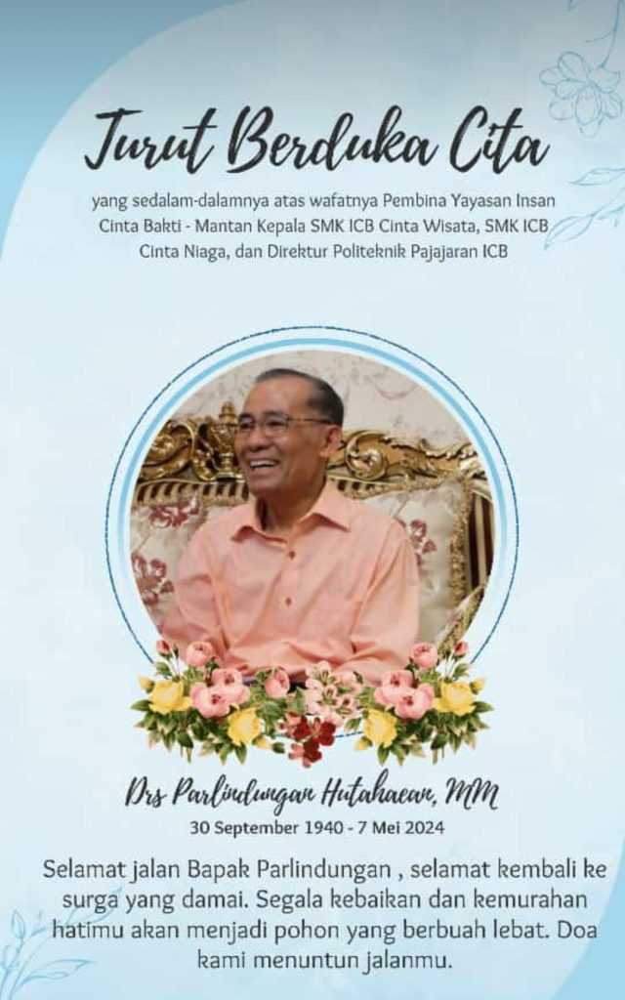
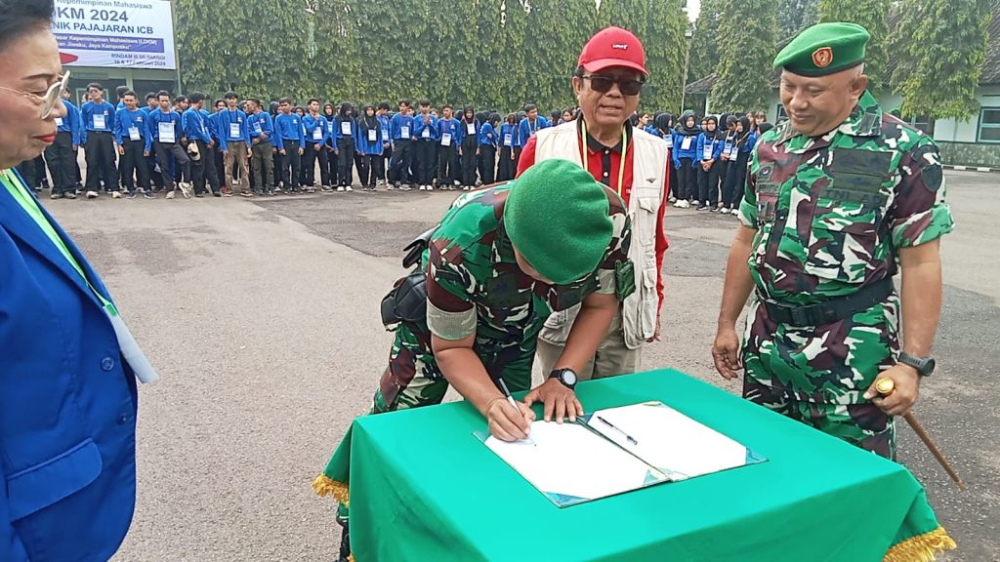
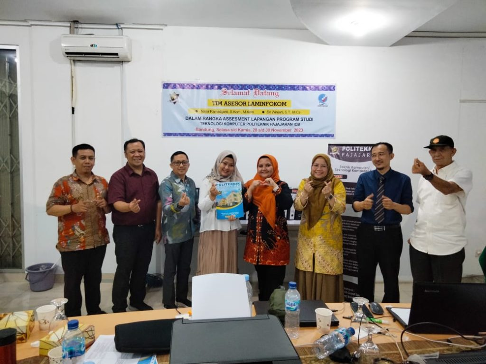

TAHUN 01 SIAP TUMBUH
Kompetensi Profesional & Kepemimpinan
Bahasa Inggris | Matematika | Akuntansi
Kompetensi Dasar Program Studi | Dasar-Dasar
Untuk Inovasi dan IT for Business
TAHUN 02 SIAP KERJA
Pendidikan VBL (Work Based Learning)
Mengelola Belajar di Tempat Kerja
TAHUN 03 SIAP UNGGUL
Sertifikat Kompetensi Khusus Sesuai
Program Studi

Berita duka
Telah berpulang Bapak Drs. Parlindungan Hutahaean, MM. Bapak kita semua
beliau sangat berjasa dalam penyelenggaraan politeknik Pajajaran ICB yang juga
sebagaiPendiri Politeknik Pajajaran ICB, Pembina Yayasan ICB, menjabat direktur
politeknik Pajajaran ICB Bandung mulai tahun 1993 dan berlanjut selama 3 periode,
almarhum akan di semayamkan di rumah duka Sejahtera Bhakti Jln. Industri No.21, Arjuna Kec …

Latihan Dasar kepemimpinan Mahasiswa 2024
Bandung, Politeknik Pajajaran mengadakan kegiatan Latihan Dasar Kepemimpinan
Mahasiswa tahun 2024 pada tanggal 16-17 Februsri 2024, pelatihan ini diikuti kurang
lebih 26 Mahasiswa dan dilaksanakan bekerjasama dengan Resimen Induk Komando
Daerah Meliter 3 Siliwangi di jalan Manado Bandung

Asesmen Lapanagn LAMINFOKOM - Prodi Teknologi Komputer
Bandung, pada tanggal 28-30 Nopember Program Studi Teknologi Komputer
melaksanakan akreditasi program studi. Tim asesor yang melaksanakan asesmen
lapangan adalah Nana Ramadijanti, S.Kom, M.Kom dan Sri Winiarti, ST.,M.Cs dari LAMINFOKOM
Latihan Dasar kepemimpinan Mahasiswa 2024
Bandung, Politeknik Pajajaran mengadakan kegiatan Latihan Dasar Kepemimpinan
Mahasiswa tahun 2024 pada tanggal 16-17 Februsri 2024, pelatihan ini diikuti kurang
lebih 26 Mahasiswa dan dilaksanakan bekerjasama dengan Resimen Induk Komando
Daerah Meliter 3 Siliwangi di jalan Manado Bandung